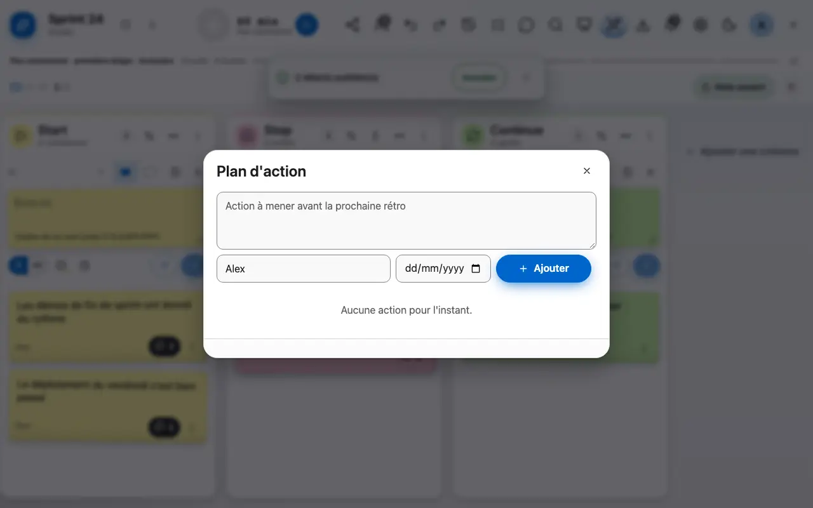
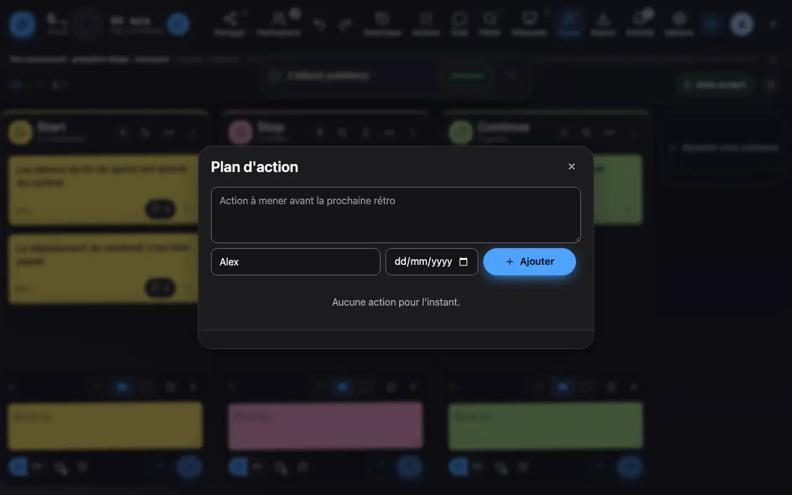

Le plan d’actions
Les décisions de la rétro deviennent des actions avec un responsable.
1 Ajoute une action, désigne un responsable et une échéance.
Les décisions de la rétro deviennent des actions: un texte, un responsable et une échéance. Une action peut venir d'une idée du board, et les actions ouvertes d'une rétro peuvent être reprises dans la suivante.

